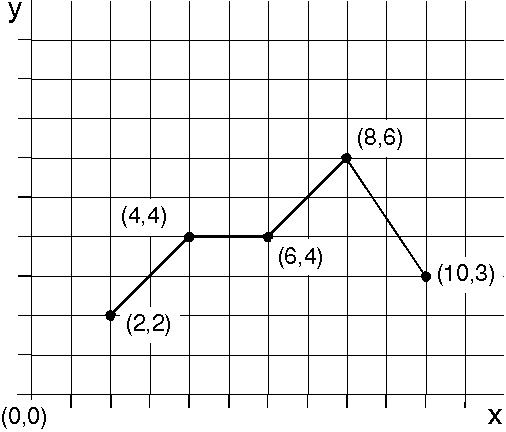
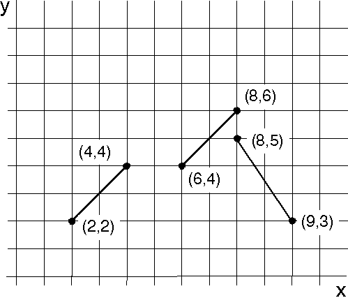

GpiPolyLine draws a sequence of connected lines, starting at the current position and passing through a series of specified coordinate positions, as shown in the following figure. After drawing the series of lines, the current position is at the end point of the last line specified by GpiPolyLine.
If you are drawing a graph that has five connected lines, you can use GpiPolyLine once rather than GpiLine five times. GpiPolyLine accepts as input a number of points and an array of point coordinates.

The starting position is (2,2), and the polyline is drawn through (4,4), (6,4), (8,6), and (10,3). The new current position is (10,3).
GpiPolyLineDisjoint is a new function that eliminates having to use a series of GpiMove and GpiLine functions to draw multiple lines that are not connected. GpiPolyLineDisjoint accepts as input an even number, the number of points, and an array of point coordinates. The first point in a point-pair is the starting point; the second, the end point of that line segment. Upon completion, the end point of the final line becomes the current position. The following figure shows the results of a GpiPolyLineDisjoint call.

A graph with discontinuities.